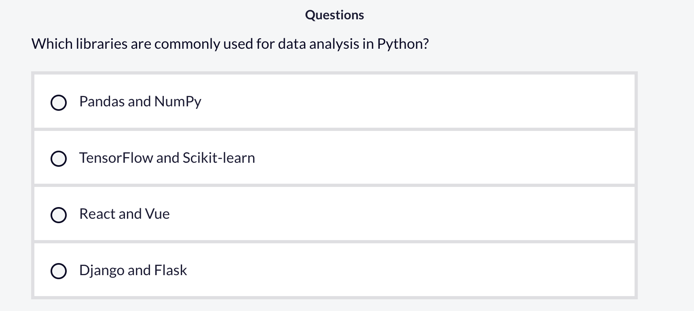
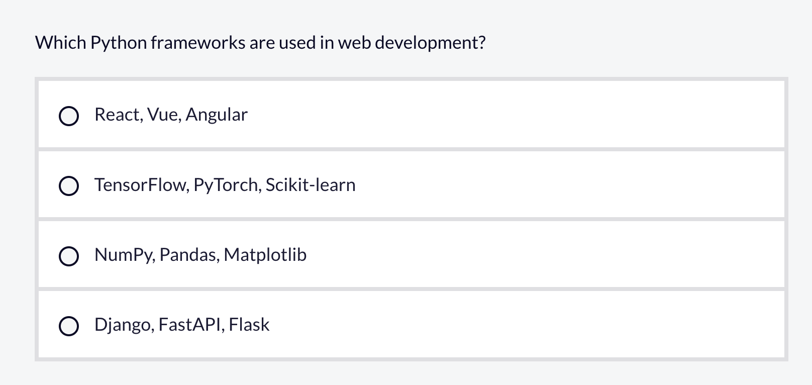
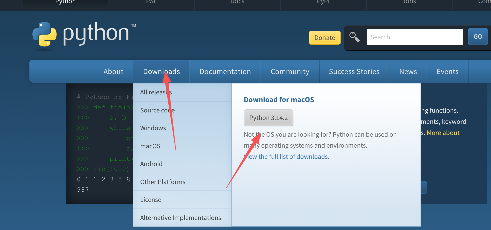
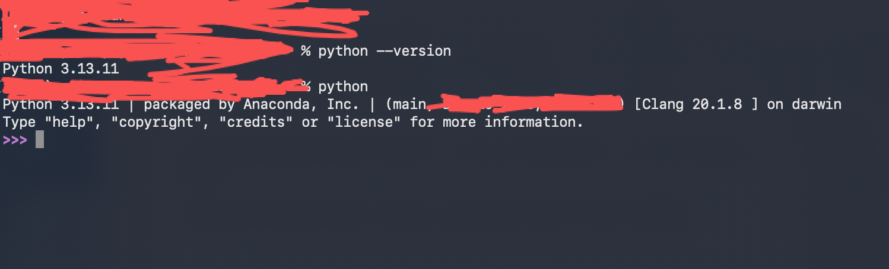
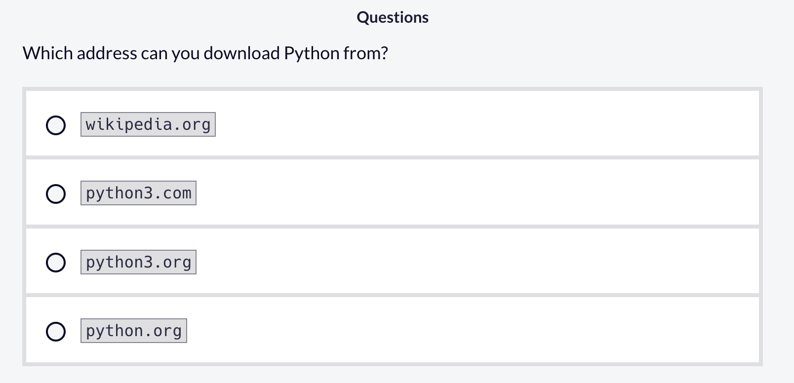
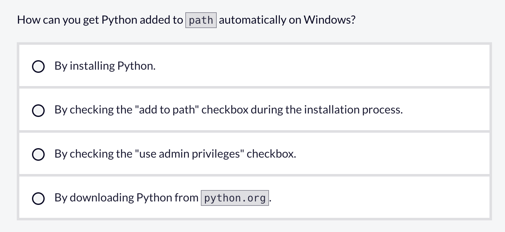
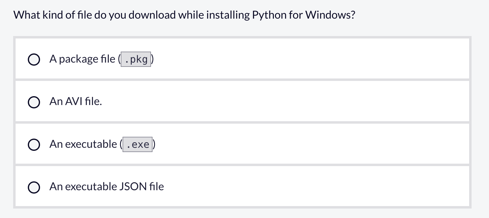

2 Python基础
2.1 Python介绍
2.1.1 Python是什么？它在工业界有哪些常见的用途？
Python 是一种通用编程语言，以其简洁性和易用性而闻名。这种易用性使 Python 成为当今最受欢迎的编程语言。2024 年，Python 正式超越 JavaScript，成为 GitHub 上最流行的语言。
Python 被广泛应用于许多领域，如数据科学和机器学习、Web 开发、脚本和自动化、嵌入式系统、物联网（IoT）等等。
Python 是目前大多数数据科学家和机器学习工程师使用的主要语言。Pandas 和 Numpy 等库让数据分析不再枯燥乏味，而 Tensorflow 和 Scikit 等库则让机器学习和使用 AI 模型变得更加触手可及。
在 Web 开发领域，Django、FastAPI 和 Flask 等 Python 框架让开发者能够以最少的精力构建可扩展且安全的后端系统。许多社交媒体平台，如 Instagram 和 Pinterest，都在后端使用了 Python。
网络安全专家和道德黑客（ethical hackers）使用 Python 来检测恶意软件和其他病毒等漏洞，构建自动化的安全扫描程序，并分析威胁。
Python 在 Raspberry Pi（是一种单板计算机（Single-Board Computer，SBC））和支持 MicroPython 的开发板等微型计算机上运行良好，因此你可以构建各种物联网项目，如智能家居设备、气象监测站等。
最后，Python 最大的优势之一就是自动化。你可以编写简单的脚本来帮助完成重复性任务，例如从电子表格中提取数据、发送电子邮件以及处理本地机器上的文件。
Selenium 和 BeautifulSoup 等库也让与网站进行交互变得轻而易举，因此你可以抓取公开数据、通过 Web 界面自动化任务，甚至管理项目的云部署。
由此可见，Python 是一种非常强大的语言，但学习起来却很容易。从简单的自动化脚本到大规模的工业级应用，几乎所有事情你都可以使用 Python 来完成。
无论你以后选择专攻哪个领域，Python 都是任何想要学习编程的人的绝佳选择。



答案：1 A 2 B 3 D
2.1.2 如何安装、配置、使用Python
在上一课中，你了解了什么是 Python 以及你可以用它做什么。现在，让我们来看看如何在你的本地机器上设置 Python。
在 Windows 和 Mac 上安装 Python 最简单的方法是从官方 Python 网站下载安装程序。在本课的后面部分，我们还将介绍如何在 Linux 上运行 Python。
访问https://www.python.org/，并将鼠标悬停在“Downloads”（下载）上。
一个弹窗会出现，显示你当前操作系统（OS）的 Python 版本。

我们首先来看看如何在运行 macOS 的电脑上安装 Python：
点击弹窗中显示的当前 Python 版本按钮，你会自动开始下载一个 .pkg 安装文件。
当 .pkg 安装程序下载完成后，打开它，然后在弹出的窗口中点击“Continue”（继续）。
继续点击“Continue”（继续）按钮，直到你进入“Installation Type”（安装类型）部分。
在那里，点击“Install”（安装）按钮。如有必要，请输入你的密码，然后开始安装。
之后，你应该会收到一条恭喜消息，提示 Python 已成功安装。点击“Close”（关闭）按钮，大功告成！
你可以通过打开终端并运行 python --version 或 python3 --version 来验证安装。
你也可以通过在终端中运行 python 或 python3 来打开 Python 解释器。

终端是一种基于文本的界面，允许你通过输入命令与电脑交互。每个操作系统都自带一个默认的终端应用程序。在 macOS 上，你可以使用终端（Terminal）应用程序。在 Windows 上，你可以使用命令提示符（Command Prompt）或 PowerShell。在 Linux 上，每个桌面环境都有其默认的终端应用程序，例如 GNOME 终端或 Konsole。
请注意，在一些较旧的 macOS 和 Linux 系统中，python 可能保留给 Python 2 使用，而 python3 则专门用于 Python 3。如果你运行 python --version 并看到 Python 2 的版本（例如 Python 2.7.18），那么你的操作系统可能依赖于一些用旧版 Python 编写的软件。如果是这种情况，你应该在今后使用 python3 来运行你的 Python 代码。Python 2 已停止维护，不应在任何新开发中使用。
要在 Windows 上安装 Python，请按照以下步骤操作：
访问 https://www.python.org/，并将鼠标悬停在“Downloads”（下载）上。你应该会看到一个写着“Download for Windows”（下载 Windows 版）的弹窗和一个带有当前 Python 版本的下载按钮。
点击版本号，你会自动开始下载一个 Windows 可执行文件（.exe）。当你下载完 Windows 版 Python 安装程序后，双击它，然后按照说明操作。当你看到“Add python.exe to Path”（将 python.exe 添加到路径）选项时，勾选该选项，然后点击“Install Now”（立即安装）。这样做会让你后续的工作更加轻松。
你可以通过打开命令行 shell（如 PowerShell）并运行 python --version 来验证安装。你也可以通过运行 python 来打开 Python 解释器。
关于 Linux 上的 Python，大多数主流发行版（如 Ubuntu、Debian 和 Fedora）都自带 Python。
只需打开一个终端并运行 python --version 或 python3 --version：
如果任一命令都没有显示 Python 版本，你可以在 https://www.python.org 上搜索适用于你 Linux 发行版的安装包，或者在网上搜索针对你的发行版推荐的 Python 安装方法。



2.2 理解变量和数据类型
2.2.1 如何声明变量？变量命名有哪些命名规范？
在 Python 中，变量就像一个贴有标签的盒子，用于存储和引用不同类型的数据。要在 Python 中声明变量，你只需使用赋值（=）运算符将一个值分配给一个标识符即可。你不需要像在 JavaScript 中那样使用 let 或 const 这样的特殊关键字，也不需要像在 C# 中那样使用 char。
在 Python 中，你只需在等号左边写上变量名，接着是赋值运算符，最后是在右边你想赋给该变量的值。下面是一个如何声明 name 和 age 变量的例子：
示例代码
name = 'John Doe'
age = 25在上面的例子中，变量 name 保存的值是 'John Doe'。这个值是一个字符串（string），即用于表示文本的一系列字符。字符串用单引号或双引号括起来，例如 'Hello' 或 "Hello"。在后续的课程中，你将学习更多关于在 Python 中处理字符串的知识。
在 Python 中命名变量时，有一些重要的规则需要牢记：
- 变量名只能以字母或下划线（
_）开头，不能以数字开头。 - 变量名只能包含字母数字字符（a-z, A-Z, 0-9）和下划线（
_）。 - 变量名区分大小写 ——
age、Age和AGE都被视为不同的变量。 - 变量名不能是 Python 的保留关键字，例如
if、class或def。
如果你违反了其中任何一条规则，你的 Python 程序将抛出一个 SyntaxError（语法错误）：
示例代码
5variable_name = 5
^
SyntaxError: invalid decimal literal现在让我们来看看 Python 中一些常见的变量命名惯例。
首先，变量名应该使用小写字母，单词之间用下划线分隔。这被称为蛇形命名法（snake case）：
示例代码
my_variable_name = 'freeCodeCamp'其次，你应该为变量使用描述性的名称。例如，如果你想将用户的年龄保存为一个变量，user_age 就比 age 或 ua 这样的缩写要好：
示例代码
user_age = 30这样一来，在一个庞大的代码库中，你就可以轻松地向其他团队成员（或者未来的自己）传达变量的用途。
另一个惯例是避免使用单个字母的变量名。这在 Python 中很常见，但应该尽量避免，因为单个字母的变量名无法传达任何目的或含义：
示例代码
x = 56 # x 代表什么意思？不过，如果你是在循环（loop）或类似结构中，使用 i、j、k 等作为变量名是很常见且可以接受的。
另外，上面例子中 # 符号及其后面的文字被称为注释（comment）。你可能已经熟悉注释了，让我们快速回顾一下并解释它们是如何工作的。
在 Python 中，注释以井号（#）开头，解释器会忽略该行 # 符号之后的所有内容：
示例代码
# 这是一行单行注释多行注释可以通过连续使用单行注释来创建：
示例代码
# 这是一个
# 多行
# 注释你可以使用注释来解释你的代码、给自己留备忘录，或者阐明某一行代码存在的原因。注释在学习或团队协作时尤其有用。
但是，你不应该使用注释来解释变量名的含义。相反，你为变量选择的名称应该是描述性的，并传达它们的用途，同时遵循前面提到的其他命名规则以防止语法错误。
2.2.2 Print 函数是如何工作的？
每种编程语言都有一些内置的方法、函数、属性或关键字，用于将数据输出到终端。在 Python 中，你可以使用 print 函数将数据打印到终端。让我们仔细看看 print 函数，这样你就可以开始自信地使用它了。
当你学习任何编程语言时，要做的第一件事通常就是编写一个简单的“Hello world!”（你好，世界！）程序。在 Python 中，你只需使用 print 函数就能非常轻松地做到这一点。
要做到这一点，你只需要把字符串 Hello world! 放在调用 print 函数所用的左右括号之间即可：
示例代码
print('Hello world!') # Hello world!在后续的课程中，你将学习更多关于 Python 中的字符串和函数的知识。现在，你可以把字符串理解为被单引号（’）或双引号（“）包围的一系列字符。
在 print('Hello world!') 这个例子中，字符串 'Hello world!' 就是传递给 print 函数的一个参数。你也可以使用 print 函数一次性显示多个值（或参数），只需用逗号将它们分隔开即可。例如：
示例代码
print('My favorite colors are', 'blue', 'green', 'red')输出结果：My favorite colors are blue green red
当你用逗号分隔各个元素时，Python 会自动在它们之间添加一个空格。当你想把几条信息一起打印出来时，这非常有用。
2.2.3 Python中常见的数据类型有哪些？如何获取变量的类型？
在使用 Python 变量之前，了解数据类型非常重要。数据类型描述了变量所持有的值的种类。例如，一个数字、一段文本或一个元素列表。编程语言使用数据类型以便知道如何存储和处理不同类型的信息。
Python 是一种像 JavaScript 一样的动态类型语言，这意味着你不需要显式地为变量声明类型。语言会根据你分配给它的值来判断它是什么数据类型。
这里有一些例子：
示例代码
name = 'John Doe' # Python 知道这是一个字符串
age = 25 # Python 知道这是一个整数这与一些静态类型语言（如 C#、Java 和 C++）形成对比，在这些语言中，你必须在声明变量时指定类型，像这样：
示例代码
string name = 'John Doe'
int age = 25Python 的动态类型特性使得编码速度非常快且更加灵活，但它也可能导致意想不到的错误，因为类型错误只有在程序运行时才会被检测到，而不是在编译时。
由于 Python 是在你的程序运行时确定数据类型的，所以类型相关的错误只有在那时才会被发现。当程序运行时，Python 会逐行执行你的代码。如果它到达了一行，发现某个对象被期望以一种它无法做到的方式行事，Python 就会停止并显示一个错误。
相比之下，有些语言在运行前会先编译你的程序。编译意味着计算机会提前检查你的代码并准备运行它。在这个步骤中，那些语言可以在程序甚至开始运行之前就捕获类型错误。
你暂时不需要了解那些语言。重要的概念很简单：
- 在 Python 中，类型错误可能在执行期间暴露出来，也就是程序实际运行并使用你的代码时。
- 编译型语言则在编译步骤（即程序被允许运行之前）捕获类型错误。
正因为如此，你可能要等到程序在运行时到达那特定的一行代码，才会发现 Python 中的类型错误。
以下是您在 Python 中将要使用的一些最常见的数据类型：
整数 (Integer): 没有小数的整数，例如 10 或 -5。
示例代码
my_integer_var = 10
print('Integer:', my_integer_var) # Integer: 10浮点数 (Float): 带有小数点的数字，比如 4.41 或 -0.4。
示例代码
my_float_var = 4.50
print('Float:', my_float_var) # Float: 4.5字符串 (String): 用单引号或双引号括起来的一系列字符，比如 ‘Hello world!’。
示例代码
my_string_var = 'hello'
print('String:', my_string_var) # String: hello布尔值 (Boolean): 布尔类型，即 True 或 False。
示例代码
my_boolean_var = True
print('Boolean:', my_boolean_var) # Boolean: True集合 (Set): 无序的唯一元素集合，比如 {4, 2, 0}。
示例代码
my_set_var = {7, 5, 8}
print('Set:', my_set_var) # Set: {7, 5, 8}字典 (Dictionary): 用花括号括起来的键值对集合，比如 {‘name’: ‘John Doe’, ‘age’: 28}。
示例代码
my_dictionary_var = {'name': 'Alice', 'age': 25}
print('Dictionary:', my_dictionary_var) # Dictionary: {'name': 'Alice', 'age': 25}元组 (Tuple): 不可变的有序集合，用括号括起来，比如 (7, 8, 4)。
示例代码
my_tuple_var = (7, 5, 8)
print('Tuple:', my_tuple_var) # Tuple: (7, 5, 8)范围 (Range): 一个数字序列，常用于循环中，例如 range(5)。
示例代码
my_range_var = range(5)
print('Range:', my_range_var) # Range: range(0, 5)列表 (List): 支持不同数据类型的有序元素集合。
示例代码
my_list = [22, 'Hello world', 3.14, True]
print(my_list) # [22, 'Hello world', 3.14, True]空值 (None): 代表没有值的特殊值。
示例代码
my_none_var = None
print('None:', my_none_var) # None: None要获取变量的数据类型，你可以使用 type() 函数：
示例代码
my_var_1 = 'Hello world'
my_var_2 = 21
print(type(my_var_1)) # <class 'str'>
print(type (my_var_2)) # <class 'int'>以下是本课涵盖的所有数据类型以及它们在终端中显示的类型：
示例代码
my_integer_var = 10
print(type(my_integer_var)) # <class 'int'>
my_float_var = 4.50
print(type(my_float_var)) # <class 'float'>
my_string_var = 'hello'
print(type(my_string_var)) # <class 'str'>
my_boolean_var = True
print(type(my_boolean_var)) # <class 'bool'>
my_set_var = {7, 5, 8}
print(type(my_set_var)) # <class 'set'>
my_dictionary_var = {'name': 'Alice', 'age': 25}
print(type(my_dictionary_var)) # <class 'dict'>
my_tuple_var = (7, 5, 8)
print(type(my_tuple_var)) # <class 'tuple'>
my_range_var = range(5)
print(type(my_range_var)) # <class 'range'>
my_list = [22, 'Hello world', 3.14, True]
print(type(my_list)) # <class 'list'>
my_none_var = None
print(type(my_none_var)) # <class 'NoneType'>内置的 isinstance() 函数允许你检查变量是否匹配特定的数据类型。它接收一个对象和你想要检查的类型，然后返回一个布尔值。这里有一些例子：
示例代码
isinstance('Hello world', str) # True
isinstance(True, bool) # True
isinstance(42, int) # True
isinstance('John Doe', int) # False2.3 字符串（Strings）简介
2.3.1 什么是字符串？什么是字符串的不可变性？
字符串是由单引号或双引号包围的一系列字符。在某些编程语言中，被单引号包围的字符与被双引号包围的字符处理方式不同，但在 Python 中，它们被视为相等的。因此，在处理字符串时，你可以任选其一。以下是一些字符串的例子：
示例代码
my_str_1 = 'Hello'
my_str_2 = "World"如果你需要一个多行字符串，可以使用三个双引号或三个单引号：
示例代码
my_str_3 = """Multiline
string"""
my_str_4 = '''Another
multiline
string'''如果你的字符串包含单引号或双引号，那么你有两个选择：
- 使用相反类型的引号。也就是说，如果你的字符串包含单引号，请使用双引号来包裹字符串，反之亦然：
示例代码
msg = "It's a sunny day"
quote = 'She said, "Hello World!"'- 使用反斜杠（
\）对字符串中的单引号或双引号进行转义。使用此方法，你可以任选单引号或双引号来包裹字符串本身：
示例代码
msg = 'It\'s a sunny day'
quote = "She said, \"Hello!\""有时，你可能需要检查一个字符串是否包含一个或多个字符。为此，Python 提供了 in 运算符，它返回一个布尔值，指明该字符或字符序列是否存在于字符串中。以下是一些例子：
示例代码
my_str = 'Hello world'
print('Hello' in my_str) # True
print('hey' in my_str) # False
print('hi' in my_str) # False
print('e' in my_str) # True
print('f' in my_str) # False现在，让我们看看如何获取字符串的长度以及如何处理字符串中的单个字符，这个过程称为索引（indexing）。要获取字符串的长度，可以使用内置的 len() 函数。以下是一个例子：
示例代码
my_str = 'Hello world'
print(len(my_str)) # 11字符串中的每个字符都有一个位置，称为索引。索引是基于零的，这意味着字符串的第一个字符的索引是 0，第二个字符的索引是 1，以此类推。要通过索引访问字符，你使用方括号（[]），并在其中放入你想访问的字符的索引。以下是一些例子：
示例代码
my_str = "Hello world"
print(my_str[0]) # H
print(my_str[6]) # w也支持负数索引，因此你可以使用 -1 获取任何字符串的最后一个字符，使用 -2 获取倒数第二个字符，以此类推：
示例代码
my_str = 'Hello world'
print(my_str[-1]) # d
print(my_str[-2]) # l许多其他编程语言将数据类型广泛地分为基本类型（primitive）或引用类型（reference）。基本类型是简单的且不可变的，意味着一旦声明就不能更改。引用类型可以包含多个值，并且要么是可变的，要么是不可变的。但 Python 并不在这两组之间划出一条严格的界限。相反，所有数据都被视为对象，其中一些对象是不可变的，而另一些是可变的。
不可变数据类型一旦声明，就无法被修改或更改。你可以将变量重新指向新的东西，这称为重新赋值，但你不能通过添加、删除或替换其任何元素来更改原始对象本身。
字符串是 Python 中的不可变数据类型。这意味着你可以将一个不同的字符串重新赋值给一个变量：
示例代码
greeting = 'hi'
greeting = 'hello'
print(greeting) # hello但不允许直接修改字符串：
示例代码
greeting = 'hi'
greeting[0] = 'H' # TypeError: 'str' object does not support item assignmentPython 中其他不可变数据类型的例子包括整数（integer）、浮点数（float）、布尔值（boolean）、元组（tuple）和范围（range）。在接下来的课程中，你将逐一了解这些类型。
2.3.2 什么是String Concatenation 和 String Interpolation?
在处理字符串时，你经常会遇到需要将不同文本片段组合在一起的情况。
在 Python 中，你可以使用加号（+）运算符将多个字符串组合在一起。这个过程被称为字符串拼接（string concatenation）。以下是使用加号运算符拼接两个字符串的方法：
示例代码
my_str_1 = 'Hello'
my_str_2 = "World"
str_plus_str = my_str_1 + ' ' + my_str_2
print(str_plus_str) # Hello World但请注意，这只适用于字符串。如果你试图将字符串与数字拼接，你会得到一个 TypeError（类型错误）：
示例代码
name = 'John Doe'
age = 26
name_and_age = name + age
print(name_and_age) # TypeError: can only concatenate str (not "int") to str发生这种情况是因为当你拼接它们时，Python 不会自动将其他数据类型（如整数）转换为字符串。Python 要求所有元素在拼接之前都必须是字符串。为了解决这个问题，你可以使用内置的 str() 函数将数字转换为字符串，该函数返回给定对象的字符串表示形式，而不会修改原始对象：
示例代码
name = 'John Doe'
age = 26
name_and_age = name + str(age)
print(name_and_age) # John Doe26你也可以使用增强赋值运算符（augmented assignment operator）来进行拼接。它由一个加号和一个等号（+=）表示，可以在一步内同时完成拼接和赋值。以下是它的实际应用：
示例代码
name = 'John Doe'
age = 26
name_and_age = name # 从名字开始
name_and_age += str(age) # 追加年龄（字符串形式）
print(name_and_age) # John Doe26将变量和表达式插入字符串的过程被称为字符串插值（string interpolation）。Python 有一种名为 f-strings（格式化字符串字面值的缩写）的字符串，它允许你使用简洁且易读的语法来处理插值。
f-strings 在引号前以 f（小写或大写均可）开头，并允许你将变量或表达式嵌入由大括号（{}）指示的替换字段中。以下是一个例子：
示例代码
name = 'John Doe'
age = 26
name_and_age = f'My name is {name} and I am {age} years old'
print(name_and_age) # My name is John Doe and I am 26 years old
num1 = 5
num2 = 10
print(f'The sum of {num1} and {num2} is {num1 + num2}') # The sum of 5 and 10 is 15请注意，在插值过程中，你不需要使用 str() 函数来转换非字符串类型。在上面的例子中，age、num1 和 num2 变量的值在底层被自动转换成了字符串。
2.3.3 什么是 String Slicing，它是如何工作的?
在上一课中，你学习了字符串中的每个字符如何通过其索引（从零开始）来识别，并使用方括号表示法进行访问：
示例代码
my_str = "Hello world"
print(my_str[0]) # H
print(my_str[6]) # w
print(my_str[-1]) # d字符串切片（String slicing）让你可以提取字符串的一部分，或者只处理其中特定的部分。以下是基本语法：
示例代码
string[start:stop]如果你想从某个特定索引提取到另一个索引，只需用冒号分隔起始和结束索引即可：
示例代码
my_str = 'Hello world'
print(my_str[1:4]) # ell请注意，结束索引是不包含的，因此 [1:4] 只提取了从索引 1 开始，一直到（但不包含）索引 4 的字符。
你也可以省略起始或结束索引，Python 会默认分别从 0 或字符串末尾开始。例如，如果你省略起始索引：
示例代码
my_str = 'Hello world'
print(my_str[:7]) # Hello w这将提取从索引 0 开始，一直到（但不包含）索引 7 的所有内容。如果你省略结束索引，情况如下：
示例代码
my_str = 'Hello world'
print(my_str[8:]) # rld这将提取从索引 8 的字符开始，直到字符串末尾的所有内容。
请注意，切片字符串不会修改原始字符串：
示例代码
my_str = 'Hello world'
print(my_str[8:]) # rld
print(my_str) # Hello world你也可以同时省略起始和结束索引，这将提取整个字符串：
示例代码
my_str = 'Hello world'
print(my_str[:]) # Hello world除了起始和结束索引外，还有一个可选的步长（step）参数，用于指定切片中每个索引之间的增量。
其语法如下：
示例代码
string[start:stop:step]在下面的例子中，切片从索引 0 开始，到 11 之前结束，并每隔一个字符提取一次（即每第二个字符）：
示例代码
my_str = 'Hello world'
print(my_str[0:11:2]) # Hlowrd利用步长参数，一个很有用的技巧是将步长设为 -1，并留空起始和结束索引，从而反转字符串：
示例代码
my_str = 'Hello world'
print(my_str[::-1]) # dlrow olleH2.3.4 常见字符串方法?
Python 提供了许多内置方法，让处理字符串变得轻而易举。这些方法包括但不限于以下内容：
- upper(): 返回一个新字符串，其中所有字符都转换为大写。
示例代码
my_str = 'hello world'
uppercase_my_str = my_str.upper()
print(uppercase_my_str) # HELLO WORLD- lower(): 返回一个新字符串，其中所有字符都转换为小写。
示例代码
my_str = 'Hello World'
lowercase_my_str = my_str.lower()
print(lowercase_my_str) # hello world- strip(): 返回一个新字符串，其中移除了指定的首尾字符。如果不传递参数，则移除首尾的空白字符（如空格、换行符等）。
示例代码
my_str = ' hello world '
trimmed_my_str = my_str.strip()
print(trimmed_my_str) # "hello world"- replace(old, new): 返回一个新字符串，其中所有
old的出现都被替换为new。
示例代码
my_str = 'hello world'
replaced_my_str = my_str.replace('hello', 'hi')
print(replaced_my_str) # hi world- split(separator): 根据指定的分隔符将字符串拆分为一个字符串列表。如果没有指定分隔符，则根据空白字符进行拆分。
示例代码
my_str = 'hello world'
split_words = my_str.split()
print(split_words) # ['hello', 'world']- join(iterable): 将可迭代对象的元素用指定的字符串连接成一个新字符串。
示例代码
my_list = ['hello', 'world']
joined_my_str = ' '.join(my_list)
print(joined_my_str) # hello world- startswith(prefix): 返回一个布尔值，指示字符串是否以指定的前缀开头。
示例代码
my_str = 'hello world'
starts_with_hello = my_str.startswith('hello')
print(starts_with_hello) # True- endswith(suffix): 返回一个布尔值，指示字符串是否以指定的后缀结尾。
示例代码
my_str = 'hello world'
ends_with_world = my_str.endswith('world')
print(ends_with_world) # True- find(substring): 返回子字符串第一次出现的索引，如果未找到则返回 -1。
示例代码
my_str = 'hello world'
world_index = my_str.find('world')
print(world_index) # 6- count(substring): 返回子字符串在字符串中出现的次数。
示例代码
my_str = 'hello world'
o_count = my_str.count('o')
print(o_count) # 2- capitalize(): 返回一个新字符串，其中首字母大写，其余字母小写。
示例代码
my_str = 'hello world'
capitalized_my_str = my_str.capitalize()
print(capitalized_my_str) # Hello world- isupper(): 如果字符串中的所有字母都是大写，则返回 True，否则返回 False。
示例代码
my_str = 'hello world'
is_all_upper = my_str.isupper()
print(is_all_upper) # False- islower(): 如果字符串中的所有字母都是小写，则返回 True，否则返回 False。
示例代码
my_str = 'hello world'
is_all_lower = my_str.islower()
print(is_all_lower) # True- title(): 返回一个新字符串，其中每个单词的首字母都大写。
示例代码
my_str = 'hello world'
title_case_my_str = my_str.title()
print(title_case_my_str) # Hello World2.4 数字与数学运算
2.4.1 如何使用整数与浮点数？
整数和浮点数是 Python 中主要的数值数据类型。使用它们，你可以存储数值数据并执行数学运算。
让我们来看看什么是整数和浮点数，如何用它们进行算术计算，以及 Python 提供的用于处理这两种类型的一些方法。
整数 (Integers) 是没有小数点的整数，可以是正数或负数：
示例代码
my_int_1 = 56
my_int_2 = -4
print(type(my_int_1)) # <class 'int'>
print(type(my_int_2)) # <class 'int'>以下是使用整数执行加法运算的方法：
示例代码
my_int_1 = 56
my_int_2 = 12
sum_ints = my_int_1 + my_int_2
print('Integer Addition:', sum_ints) # Integer Addition: 68以下是使用整数执行减法运算的方法：
示例代码
my_int_1 = 56
my_int_2 = 12
# Subtraction
diff_ints = my_int_1 - my_int_2
print('Integer Subtraction:', diff_ints) # Integer Subtraction: 44以下是使用整数执行乘法运算的方法：
示例代码
my_int_1 = 12
my_int_2 = 4
# Multiplication
product_ints = my_int_1 * my_int_2
print('Integer Multiplication:', product_ints) # Integer Multiplication: 48以下是使用整数执行除法运算的方法：
示例代码
my_int_1 = 56
my_int_2 = 12
# Division
div_ints = my_int_1 / my_int_2
print('Integer Division:', div_ints) # Integer Division: 4.666666666666667浮点数 (Floats) 是带有小数点的正数或负数，例如 3.14、-0.5 或 0.0。
示例代码
my_float_1 = -12.0
my_float_2 = 4.9
print(type(my_float_1)) # <class 'float'>
print(type(my_float_2)) # <class 'float'>以下是使用浮点数执行加法运算的方法：
示例代码
my_float_1 = 5.4
my_float_2 = 12.0
float_addition = my_float_1 + my_float_2
print('Float Addition:', float_addition) # Float Addition: 17.4以下是使用浮点数执行减法运算的方法：
示例代码
my_float_1 = 5.4
my_float_2 = 12.0
float_subtraction = my_float_2 - my_float_1
print('Float Subtraction:', float_subtraction) # Float Subtraction: 6.6以下是使用浮点数执行乘法运算的方法：
示例代码
my_float_1 = 5.4
my_float_2 = 12.0
float_multiplication = my_float_2 * my_float_1
print('Float Multiplication:', float_multiplication) # Float Multiplication: 64.80000000000001以下是使用浮点数执行除法运算的方法：
示例代码
my_float_1 = 5.4
my_float_2 = 12.0
float_division = my_float_2 / my_float_1
print('Float Division:', float_division) # Float Division: 2.222222222222222如果你将一个整数和一个浮点数相加，结果会自动转换为浮点数：
示例代码
my_int = 56
my_float = 5.4
sum_int_and_float = my_int + my_float
print(sum_int_and_float) # 61.4
print(type(sum_int_and_float)) # <class 'float'>对于其他基本算术运算也是如此，比如减法、乘法和除法。如果你混合使用整数和浮点数，Python 将返回一个浮点数作为结果。
你也可以执行更复杂的算术计算，例如使用取模运算符获取两个数的余数、向下取整除法以及使用整数和浮点数进行幂运算。
取模运算符 (%) 返回左边的值除以右边的值时的余数：
示例代码
my_int_1 = 56
my_int_2 = 12
my_float_1 = 5.4
my_float_2 = 12.0
mod_ints = my_int_1 % my_int_2
mod_floats = my_float_2 % my_float_1
print('Integer Modulus:', mod_ints) # Integer Modulus: 8
print('Float Modulus:', mod_floats) # Float Modulus: 1.1999999999999993向下取整除法 (Floor division) 将两个数相除并返回小于或等于结果的最大整数。这是通过双正斜杠运算符 (//) 完成的：
示例代码
my_int_1 = 56
my_int_2 = 12
my_float_1 = 5.4
my_float_2 = 12.0
floor_div_ints = my_int_1 // my_int_2
floor_div_floats = my_float_2 // my_float_1
print('Integer Floor Division:', floor_div_ints) # Integer Floor Division: 4
print('Float Floor Division:', floor_div_floats) # Float Floor Division: 2.0幂运算 (Exponentiation) 将一个数提升为另一个数的幂，使用双星号运算符 (**) 完成：
示例代码
my_int_1 = 56
my_int_2 = 12
my_float_1 = 5.4
my_float_2 = 12.0
exp_ints = my_int_1 ** my_int_2
exp_floats = my_float_1 ** my_float_2
print('Integer Exponentiation:', exp_ints) # Integer Exponentiation: 951166013805414055936
print('Float Exponentiation:', exp_floats) # Float Exponentiation: 614787626.1765089Python 还提供了内置函数，用于将数值数据或字符串转换为整数或浮点数。
float() 函数返回从给定数字构造的浮点数：
示例代码
my_int_1 = 56
my_float_1 = float(my_int_1)
print(my_float_1) # 56.0
print(type(my_float_1)) # <class 'float'>int() 函数返回从给定数字构造的整数：
示例代码
my_float = 12.92563
my_int = int(my_float)
print(my_int) # 12
print(type(my_int)) # <class 'int'>此外，你可以使用相同的内置函数将字符串转换为浮点数或整数：
示例代码
my_str_int = '45'
my_str_float = '7.8'
converted_int = int(my_str_int)
converted_float = float(my_str_float)
print(converted_int, type(converted_int)) # 45 <class 'int'>
print(converted_float, type(converted_float)) # 7.8 <class 'float'>以下是 Python 提供的用于处理整数和浮点数的其他一些方法。
round(): 将数字四舍五入到指定的小数位数。默认情况下，此函数四舍五入到最接近的整数，并返回一个没有小数位的整数：
示例代码
my_int_1 = 4.798
my_int_2 = 4.253
rounded_int_1 = round(my_int_1)
rounded_int_2 = round(my_int_2, 1)
print(rounded_int_1) # 5
print(rounded_int_2) # 4.3abs(): 返回数字的绝对值，
示例代码
num = -15
absolute_value = abs(num)
print(absolute_value) # 15pow(): 将一个数提升为另一个数的幂，或执行模幂运算。
示例代码
result_1 = pow(2, 3) # Equivalent to 2 ** 3
print(result_1) # 8
result_2 = pow(2, 3, 5) # (2 ** 3) % 5
print(result_2) # 32.4.2 Augmented Assignments是如何工作的?
增强赋值（Augmented assignment）将二元运算和赋值合并为一个步骤。它接收一个变量，将其与另一个值进行运算，并将结果存回同一个变量中。
如果你熟悉 JavaScript 等语言，你可能听说过加法赋值运算符（+=）、减法赋值（-=）等。这些在 Python 中也存在。唯一的区别是，在 Python 中它们被称为增强赋值（augmented assignments）。
增强赋值的基本语法如下：
示例代码
variable <operator>= value这比下面这种写法更高效：
示例代码
variable = variable <operator> value例如，以下是如何使用增强赋值将 5 加到现有变量中的例子：
示例代码
my_var = 10
my_var += 5
print(my_var) # 15下面是不使用增强赋值的同样操作：
示例代码
my_var = 10
my_var = my_var + 5
print(my_var) # 15增强赋值的优势在于，它提供了一种简洁且易读的方式来更新变量值，而无需重复变量名。这样一来，它减少了冗余，并避免了因打字错误之类的问题而可能产生的错误。
每个运算符都可以使用增强赋值。我们已经看过了加法赋值运算符（+=），让我们来看看其他的。
减法赋值运算符 (-=) 用左变量减去右操作数，并将差值存回左变量：
示例代码
count = 14
count -= 3
print(count) # 11乘法赋值运算符 (*=) 将左变量乘以右操作数，并将乘积存回左变量：
示例代码
product = 65
product *= 7
print(product) # 455除法赋值运算符 (/=) 用左变量除以右操作数，并将结果存回左变量：
示例代码
price = 100
price /= 4
print(price) # 25.0向下取整除法运算符 (//=) 将左变量向下取整除以右操作数，并将结果存回左变量：
示例代码
total_pages = 23
total_pages //= 5
print(total_pages) # 4取模赋值运算符 (%=) 计算左变量除以右操作数的余数，并将其存回左变量：
示例代码
bits = 35
bits %= 2
print(bits) # 1幂赋值运算符 (**=) 将左变量提升为右操作数的幂，并将结果存回左变量：
示例代码
power = 2
power **= 3
print(power) # 8你也可以对字符串使用一些增强赋值运算符。例如，加法赋值运算符可以轻松地拼接字符串：
示例代码
greet = 'Hello'
greet += ' World'
print(greet) # Hello World乘法赋值运算符可以用来重复一个字符串：
示例代码
greet = 'Hello'
greet *= 3
print(greet) # HelloHelloHello其他增强赋值运算符与字符串一起使用时会抛出 TypeError（类型错误）：
示例代码
greet = 'Hello'
greet -= ' World'
print(greet) # TypeError: unsupported operand type(s) for -=: 'str' and 'str'示例代码
greet = 'Hello'
greet /= 'World'
print(greet) # TypeError: unsupported operand type(s) for /=: 'str' and 'str'如果你想知道自增和自减运算符（++ 和 --）在 Python 中是否有效，答案是无效的。这是因为 Python 故意避免了 C 风格的自增和自减快捷方式，以便保持语言的清晰和明确。
你可以简单地写 x += 1 来代替 x++，这清楚地表明你将变量 x 的值增加了 1。
在 Python 中编写 ++x 只是两次应用了一元加号，而不会对任何东西进行自增：
示例代码
my_var = 5
print(+my_var) # 5
print(++my_var) # 5
print(+++my_var) # 5
my_var += 1
print(my_var) # 62.5 布尔值与条件语句
2.5.1 条件语句和逻辑运算符是如何工作的？
条件语句（Conditionals）让你可以根据特定条件是真还是假来控制程序的流程。
但在深入探讨所有这些之前，让我们先回顾一下条件语句的基本构成要素，从比较运算符开始。比较运算符允许你比较两个或多个值，并返回一个布尔值。
在上一课中，你了解到布尔值（Booleans）是 Python 中的一种数据类型，其值只能是 True 或 False。
以下是 Python 中比较运算符的表格：
| 运算符 | 名称 | 描述 |
|---|---|---|
| == | 等于 | 检查两个值是否相等 |
| != | 不等于 | 检查两个值是否不相等 |
| > | 大于 | 检查左侧的值是否大于右侧的值 |
| < | 小于 | 检查左侧的值是否小于右侧的值 |
| >= | 大于或等于 | 检查左侧的值是否大于或等于右侧的值 |
| <= | 小于或等于 | 检查左侧的值是否小于或等于右侧的值 |
以下是其中一些表达式，它们的值为 True 或 False：
示例代码
print(3 > 4) # False
print(3 < 4) # True
print(3 == 4) # False
print(4 == 4) # True
print(3 != 4) # True
print(3 >= 4) # False
print(3 <= 4) # True这些运算符可以在条件语句中用来比较值，并根据条件语句的真假来运行特定的代码。
在 Python 中，最基本的条件语句是 if 语句。其基本语法如下：
示例代码
if condition:
pass # 如果条件为 True，则执行这里的代码if语句以if关键字开头。condition是一个表达式，其值为 True 或 False，后面跟着一个冒号 (:)。if语句的主体构成一个代码块，即一组属于在一起的语句。在 Python 中，缩进级别定义了代码块。- 在上面的例子中，
if语句的主体包含一个pass语句。当执行pass语句时，什么也不会发生。这是一个特殊的关键字，可以用作未来代码的占位符，当不允许出现空代码块时，它非常有用。
只有当条件为 True 时，if 语句内的代码才会运行。例如：
示例代码
age = 18
if age >= 18:
print('You are an adult') # You are an adult请注意 print('You are an adult') 前面的缩进。虽然其他编程语言使用花括号等字符来定义代码块，仅将缩进用于提高可读性，但在 Python 中，代码块是由缩进决定的。
以下代码将引发 IndentationError（缩进错误），这是 Python 指出在代码的某处需要缩进的方式：
示例代码
age = 18
if age >= 18:
print('You are an adult') # IndentationError: expected an indented block after 'if' statement on line 3尽管你可以使用任意数量的空格（只要你保持一致）来确定每一级缩进，但 Python 风格指南建议使用四个空格。
代码块也出现在循环和函数中，你将在以后的课程中学习到它们。
回到我们的例子，如果 age 小于 18，终端中将不会打印任何内容：
示例代码
age = 12
if age >= 18:
print('You are an adult') # 终端中不会显示任何内容但是，如果你想在 age 小于 18 时也打印一些内容怎么办？这就是 else 子句的用处。当 if 条件为假时，else 子句就会运行。以下是 if...else 语句的语法：
示例代码
if condition:
pass # 如果条件为 True，则执行这里的代码
else:
pass # 如果条件为 False，则执行这里的代码例如：
示例代码
age = 12
if age >= 18:
print('You are an adult')
else:
print('You are not an adult yet') # You are not an adult yet在某些情况下，你可能需要考虑多个条件。为此，Python 允许你使用 elif（else if 的缩写）关键字来扩展你的 if 语句。
其语法如下：
示例代码
if condition:
pass # 如果条件为 True，则执行这里的代码
elif condition2:
pass # 如果条件2为 True，则执行这里的代码
else:
pass # 如果所有条件都为 False，则执行这里的代码例如：
示例代码
age = 12
if age >= 18:
print('You are an adult')
elif age >= 13:
print('You are a teenager')
else:
print('You are a child') # You are a child请注意，你可以根据需要使用任意数量的 elif 语句：
示例代码
age = 2
if age >= 65:
print('You are a senior citizen')
elif age >= 30:
print('You are an adult in your prime')
elif age >= 18:
print('You are a young adult')
elif age >= 13:
print('You are a teenager')
elif age >= 3:
print('You are a young child')
else:
print('You are a toddler or an infant') # You are a toddler or an infant现在你已经了解了 Python 中的比较运算符和条件语句是如何工作的，你可以开始编写基于逻辑和输入做出决策的程序了。无论你是比较值还是通过多个条件进行分支，这些工具都是编写灵活、响应式代码的基础。
2.5.2 什么是 Truthy 和 Falsy 值？布尔运算符与短路求值是如何工作的？
在上一课中，你学习了如何使用比较运算符和条件语句来控制程序的流程。
虽然这些功能非常强大，但你经常会遇到需要同时比较多个值的情况。这可能会导致嵌套的条件语句，例如：
示例代码
is_citizen = True
age = 25
if is_citizen:
if age >= 18:
print('You are eligible to vote') # You are eligible to vote
else:
print('You are not eligible to vote')上面的例子将首先检查 is_citizen 是否为 True。如果是，它将进入嵌套的 if 语句并检查 age 是否大于或等于 18。由于 age 大于或等于 18，打印到终端的消息将是 “You are eligible to vote”。如果 is_citizen 为 False，那么打印到终端的消息将是 “You are not eligible to vote”。
如果你正在处理更复杂的条件语句，那么你可以使用 Python 的 and、or 和 not 运算符。
但在深入研究这些运算符之前，让我们先看看什么是“真值（truthy）”和“假值（falsy）”。
在 Python 中，每个值都有一个固有的布尔值，即在逻辑上下文中它应该被视为 True 还是 False 的内置判断。许多值被认为是“真值”，也就是说，它们在逻辑上下文中会被求值为 True。其他的则是“假值”，意味着它们会被求值为 False。
以下是几个“假值”的例子：
- None
- False
- 整数 0
- 浮点数 0.0
- 空字符串 “”
其他值，如非零数字和非空字符串，都是“真值”。
如果你想检查一个值是“真值”还是“假值”，你可以使用内置的 bool() 函数。它显式地将一个值转换为其布尔等价物，并为“真值”返回 True，为“假值”返回 False。以下是几个例子：
示例代码
print(bool(False)) # False
print(bool(0)) # False
print(bool('')) # False
print(bool(True)) # True
print(bool(1)) # True
print(bool('Hello')) # True现在你理解了“真值”和“假值”，我们可以来看看布尔运算符，它们也被称为逻辑运算符。这些是特殊的运算符，允许你组合多个表达式，从而在代码中创建更复杂的决策逻辑。
Python 中有三个布尔运算符：and、or 和 not。
让我们先看看 and 运算符。
and 运算符接受两个操作数，如果第一个操作数是“假值”，则返回第一个操作数，否则返回第二个操作数。为了让一个表达式的结果为“真值”，两个操作数都必须是“真值”。
这是一个例子：
示例代码
is_citizen = True
age = 25
print(is_citizen and age) # 25在上面的例子中，数字 25 被打印到终端，因为如果第一个操作数为 True，and 运算符将求值第二个操作数。and 运算符被称为“短路运算符”。短路意味着 Python 从左到右检查值，并在确定最终结果后立即停止。
之所以叫“短路（short circuit）”，是因为这个概念来自电子学里的“短路”隐喻。在正常情况下，电流应该按照设计好的完整路径流过所有元件，但一旦发生短路，电流就会绕过中间本该经过的部分，走一条更短的路径，后面的元件因此不会再被通电。逻辑运算里的短路也是同样的意思。一个逻辑表达式本来可以理解为要依次计算所有部分，但在实际执行时，Python 会从左到右判断，一旦发现当前结果已经足以确定整个表达式的最终结果，就会立刻返回，不再继续计算后面的部分。这样一来，后面的表达式就被“绕过”了，执行路径被提前截断，就像电流走了捷径一样。因此，“短路”这个名字强调的不是简单的“提前停止”，而是原本存在的一条完整执行路径被缩短、被切断了，这正是短路求值这个机制的核心含义。
你经常会在 if 语句中使用 and 来检查是否满足多个条件。以下是将前面的例子重构为使用 and 运算符而不是嵌套 if 语句的方法：
示例代码
is_citizen = True
age = 25
if is_citizen and age >= 18:
print('You are eligible to vote') # You are eligible to vote
else:
print('You are not eligible to vote')在上面的例子中，is_citizen 为 True，且 age >= 18 求值为 True。由于 and 运算符的两个操作数都是“真值”，因此条件 is_citizen and age >= 18 求值为 True，并执行 if 块中的打印调用。
现在让我们看看 or 运算符。这个运算符如果第一个操作数是“真值”，则返回第一个操作数，否则返回第二个操作数。如果至少有一个操作数是“真值”，那么 or 表达式的结果就是“真值”。or 运算符也是一个“短路运算符”。这是一个例子：
示例代码
age = 19
is_employed = False
print(age or is_employed) # 19下面的代码将打印数字 19，因为第一个操作数 age 是 True。
如果你需要检查一个或多个表达式是否为 True，那么你可以在条件语句中使用 or 运算符，像这样：
示例代码
age = 19
is_student = True
if age < 18 or is_student:
print('You are eligible for a student discount') # You are eligible for a student discount
else:
print('You are not eligible for a student discount')在这种情况下，age < 18 是 False，但 is_student 是 True。由于至少有一个条件为真，整个 or 表达式求值为 True，并打印 if 块中的折扣信息。
我们将要学习的最后一个运算符是 not 运算符，它接受一个操作数并反转其布尔值。它将“真值”转换为 False，将“假值”转换为 True。与我们之前看过的运算符不同，not 总是返回 True 或 False。
以下是几个例子：
示例代码
print(not '') # True, 因为空字符串是假值
print(not 'Hello') # False, 因为非空字符串是真值
print(not 0) # True, 因为 0 是假值
print(not 1) # False, 因为 1 是真值
print(not False) # True, 因为 False 是假值
print(not True) # False, 因为 True 是真值在条件语句中使用 not 运算符来检查某事是否为“非 True”或“非 False”是很常见的，像这样：
示例代码
is_admin = False
if not is_admin:
print('Access denied for non-administrators.') # Access denied for non-administrators.
else:
print('Welcome, Administrator!')由于 is_admin 为 False，那么 not is_admin 就是在说“非 False”，即 True。所以消息 “Access denied for non-administrators.” 将被打印。
现在你理解了“真值”和“假值”、and、or 和 not 运算符以及短路的工作原理，你就可以编写更灵活、更易读的条件逻辑了。
2.6 理解函数与作用域
2.6.1 Python 中的函数是如何工作的？
函数是可重复使用的代码块，当你调用它们时它们就会运行。许多编程语言都带有内置函数，这让入门变得更加容易。Python 也不例外，在之前的课程中我们已经介绍过一些内置函数，比如 print()。
另一个有用的内置函数是 input()，它让你可以提示用户输入内容：
示例代码
name = input('What is your name?') # 用户输入 "Kolade" 并按下回车
print('Hello', name) # 输出: Hello Kolade另一方面，int() 可以将数字、布尔值和数值字符串转换为整数：
示例代码
print(int(3.14)) # 3
print(int('42')) # 42
print(int(True)) # 1
print(int(False)) # 0你也可以编写自己的自定义函数。要做到这一点，你使用 def 关键字，后跟你想要给函数起的名字、一对括号和一个冒号。然后在新的一行，你编写函数应该运行的代码。函数运行的代码也被称为函数的主体（body）。
这是一个名为 hello 的自定义函数的例子，它在终端打印字符串 “Hello World”：
示例代码
def hello():
print('Hello World')要运行这个函数，你需要通过其名称后跟一对括号来调用它：
示例代码
hello() # Hello World请注意 print('Hello World') 前面的缩进。正如你可能从之前的课程中回忆起来的，Python 依靠缩进来确定哪些语句组属于在一起。这些语句组被称为代码块。
这里是另一个简单的函数，它在终端打印两个数字的和：
示例代码
def calculate_sum(a, b):
print(a + b)你可以看到，我们的函数 calculate_sum 在括号中有 a 和 b，它们由逗号分隔。这些被称为参数。将参数视为充当“槽位”的占位符变量，用于存放你调用函数时传入的值。
要使用这些参数，你必须传入“实参”。实参是你在调用函数时传递给函数的值。
这是如何调用 calculate_sum 函数来将数字 3 和 1 相加的例子：
示例代码
calculate_sum(3, 1) # 4如果你没有传递正确数量的实参就调用函数，你会得到一个 TypeError（类型错误）：
示例代码
calculate_sum()
# TypeError: calculate_sum() missing 2 required positional arguments: 'a' and 'b'函数还使用一个特殊的 return（返回）关键字来退出函数并返回一个值。如果你没有显式地使用 return，Python 将默认返回 None。
这是一个例子：
示例代码
def calculate_sum(a, b):
print(a + b)
my_sum = calculate_sum(3, 1) # 4
print(my_sum) # None你可以看到 calculate_sum 函数打印了 a 和 b 的和，但它没有显式地返回任何东西。所以当我们将其结果赋值给 my_sum 时，该值实际上是 None。为了解决这个问题，你可以使用 return 关键字来发送回结果：
示例代码
def calculate_sum(a, b):
return a + b
my_sum = calculate_sum(3, 1)
print(my_sum) # 4现在，calculate_sum 返回了 a 和 b 的和，该和被存储在 my_sum 中。
2.6.2 什么是 Python 中的作用域？它是如何起作用的？
在 Python 中，作用域（Scope）决定了你可以在代码的哪个位置访问一个变量。它控制着变量的生命周期，以及 Python 在代码的不同部分如何解析该变量。
为了正确确定作用域，Python 遵循 LEGB 规则，其含义如下：
- L - 局部作用域 (Local scope)：在函数或类内部定义的变量。
- E - 闭合作用域 (Enclosing scope)：在嵌套函数（封闭函数）内部定义的变量。
- G - 全局作用域 (Global scope)：在模块或文件的顶层定义的变量。
- B - 内置作用域 (Built-in scope)：Python 预定义的函数、模块、关键字和对象等保留名称。
Python 使用 LEGB 规则来解析程序中变量的作用域。我们将深入探讨每一个规则，以便你更好地理解这个过程。
局部作用域意味着在函数或类内部声明的变量只能在该函数或类内部被访问。
这是一个例子：
示例代码
def my_func():
my_var = 10
print(my_var)在这种情况下，my_func 函数拥有它自己的作用域，该作用域无法从函数外部访问。调用 my_func 将输出 10，但在函数外部打印 my_var 会导致 NameError（名称错误）：
示例代码
def my_func():
my_var = 10 # 在 my_func 内部局部作用域
print(my_var)
my_func() # 10
print(my_var) # NameError: name 'my_var' is not defined闭合作用域意味着一个嵌套在另一个函数内部的函数可以访问它所嵌套的外部函数的变量。
例如：
示例代码
def outer_func():
msg = 'Hello there!'
def inner_func():
print(msg)
inner_func()
outer_func() # Hello there!在这个例子中，内部函数 inner_func 可以自由地访问在外部函数 outer_func 中定义的 msg 变量。但是，请注意外部函数无法访问在任何嵌套函数内部定义的变量：
示例代码
def outer_func():
msg = 'Hello there!'
print(res) # 尝试访问尚未定义的 res
def inner_func():
res = 'How are you?'
print(msg)
inner_func()
outer_func() # NameError: name 'res' is not defined这是因为 res 是在 inner_func 内部局部作用域的。另外，请注意 outer_func 尝试在调用 inner_func 之前打印 res。
一个解决方案是在闭合作用域（即 outer_func 内部）将 res 初始化为空字符串。然后在 inner_func 内部，使用 nonlocal 关键字将 res 声明为非局部变量：
示例代码
def outer_func():
msg = 'Hello there!'
res = "" # 在闭合作用域中声明 res
def inner_func():
nonlocal res # 允许修改闭合作用域中的变量
res = 'How are you?'
print(msg) # 访问 outer_func() 中的 msg
inner_func()
print(res) # 现在 res 可以被访问且已被修改
outer_func()
# 输出:
# Hello there!
# How are you?全局作用域指的是在任何函数或类外部声明的变量，这些变量可以从程序的任何地方被访问。在这里，my_var 可以在任何地方被访问，即使是在它没有被定义的函数内部：
示例代码
my_var = 100
def show_var():
print(my_var)
show_var() # 100
print(my_var) # 100如果你想让你在函数内部定义的局部变量在全局范围内可访问，你可以使用 global 关键字：
示例代码
my_var_1 = 7
def show_vars():
global my_var_2
my_var_2 = 10
print(my_var_1)
print(my_var_2)
show_vars() # 7 10
# my_var_2 现在是一个全局变量，可以在程序的任何地方被访问
print(my_var_2) # 10你也可以使用 global 关键字来修改一个全局变量：
示例代码
my_var = 10 # 一个全局变量
def change_var():
global my_var # 允许修改全局变量
my_var = 20
change_var()
print(my_var) # my_var 现在被全局修改为 20最后，内置作用域指的是 Python 所有的内置函数、模块和关键字，它们在程序的任何地方都可用：
示例代码
print(str(45)) # '45'
print(type(3.14)) # <class 'float'>
print(isinstance(3, str)) # False